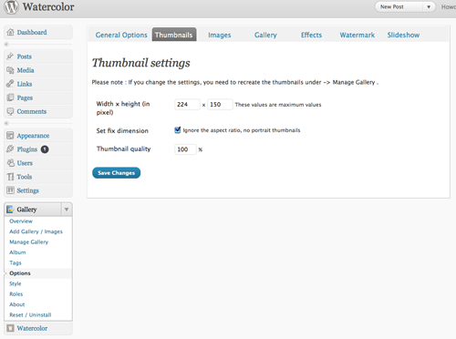

“simple” Documentation by “ansimuz
v1.0
“SIMPLE WORDPRESS THEME”
Thank you for purchasing my theme. If you
have any questions that are beyond the scope of this help file, please
feel free to email via my user page contact form here.
Thanks so much!
Table of Contents
- About The Theme
- Installation
- Configuration
- Setting Up the home page
- Setting Up a Regular Page
- Setting Up The Contact Page
- Setting Up a Gallery Page
- Setting Up a Video Gallery Page
- Setting Up the Portfolio
- Setting Up the Archives
- Shortcodes
- CSS Files and Structure
- JavaScript
- PSD Files
- Sources and Credits
- FAQ
- SUPPORT FORUMS
A) About The Theme - top
This theme is designed for use with WordPress 3.0 or Higher. I suggest
to update your wordpress installation before installing this theme.
This theme has a ready menu panel in the admin called simple where you
can set the skins and other settings explained later in this document.
You will need to download and activate the nextGen
gallery plugin from Alex Rabe its free but you could always donate to
contribute its development.
This theme is widget ready you can add widgets to the sidebar and also to
the footer, i recomend to configure the css files if a widget is displaying
wrong.
B) Installation - top
You can either way:
1) Use the WordPress Theme upload
- Login to your wp-admin
- In the Appearance menu click on the Add New
Themes
- At the top of the page click upload and browse for the theme zipped.
- Click in the Appeareance>Themes tab in the admin sidebar and activate
the theme.
2) Upload by FTP
- Go to the themes directory in your server with an ftp client. It should
be in:
your_wordpresss_directory/wp-content/themes
- Upload the simple folder to the themes directory
in your server.
- When upload is complete login to your wp-admin and click
in the Appeareance>Themes tab in the admin sidebar and activate the
theme.
Important. You need to have 2 pages defined
for this theme to the front page to work.
You will need a home page
and a blog page
follow these instructions to have them ready:
- Login to your wp-admin.
- Create two WordPress Pages from the "Add New Page" panel.
- Title one as "Home" as your "static" front
page.
- Set the "Front" template to the default template.
- Publish the Page.
- Title the second one as "Blog" This page will be a place-holder
for showing the Posts on your site.
- Do not use a custom Page template for this page!
- Publish the Page.
- Go to Administration > Settings > Reading panel.
- Set which page will be designated the "front" page. Choose
from display your latest blog posts on the "Blog" Page and "static
page" for the "Home" Page.
- Enable "Permalinks" to show the "page title" in
the address, since /index.php?p=423 defeats the purpose of making
a static front page.
- Save changes.
Read the official WordPress instructions here.
C) Configuration - top
Once installed a new panel named simple will appear in the sidebar of
the admin panel of your WordPress.
If you want to feed your newly installed wordpress site to look like the one in the preview you can import the xml file (wordpress.feed.xml.) included in the into the tools>import tab in the wp-admin.
Simple wp-admin settings:
General Settings Options
- Search box visibility
- Toggle recent comments display at the sidebar
- Text labels
- Page 404 content
- Footer bottom text content
Appearance Options
- Header/Footer BG degree
- Logo settings
- Text/Face settings
- BG options
Front Page Options
- Headline text
- Front page thumbnail options
- Columns options
Slideshow Options
- Toggle slideshow visibility
- Choose the transition effect
- Set the Transition speed
- Set the Tansition delay
- Specify the urls and links of the slides
Gallery Options
- Toggle display visibility
- Toggle visibility of the bottom text for the thumbnails
Social Options
- Twitter options
- Follow us links and label
Portfolio Options
- Twitter options
- Follow us links and label
Contact Options
- Set any number of recipient emails separated by commas
- Set the subject for the email
- Set the text beneath the contact form
- Change the thanks message
- Set the url image for the map display
- Set the text for the contact address
Staff Options
WP menu
This theme supports "wp-menu" wich is an option to customize your
own menu by adding links, pages or categories in any order. Don't worry
if you dont define a "wp-menu" the theme will display a "regular menu"
by default.
To set your wp-menu ready go to the "menu" tab under the "Appeareance"
tab in the admin panel. then create the custom menu by addin one menu
in the right panel, just write the name for your menu then press create
menu. Then under Theme locations to the left select your newly created
menu from the combo box and finally add items to your menu.
Official source here
Trigger the tooltips
Add an image set the title text in the "Edit Image Title".
then click on advanced settings and in the "CSS CLASS" input type "tool".
It will display the title of the image when rollover on it.
There a four different positions for the tooltip
- tool
- tool-right
- tool-bottom
- tool-left
D) Setting Up the Home Page - top
You will need a home page
and a blog page
follow these instructions to have them ready:
- Login to your wp-admin.
- Create two WordPress Pages from the "Add New Page" panel.
- Title one as "Home" as your "static" front
page.
- Set the "Front" template to the default template.
- Publish the Page.
- Title the second one as "Blog" This page will be a place-holder
for showing the Posts on your site.
- Do not use a custom Page template for this page!
- Publish the Page.
- Go to Administration > Settings > Reading panel.
- Set which page will be designated the "front" page. Choose
from display your latest blog posts on the "Blog" Page and "static
page" for the "Home" Page.
- Enable "Permalinks" to show the "page title" in
the address, since /index.php?p=423 defeats the purpose of making
a static front page.
- Save changes.
Read the official WordPress instructions here.
D) Setting Up a Regular Page - top
Follow this easy steps:
- Add a new page.
- Title whatever you want (About, History etc...)
- Use the Default Template from the Template combo
box at the right Page Atributes panel .
- Set the order the higher number will display to the left side of
the menu bar.
- Optionally you can set a subtitle adding a custom field named subtitle.
You can use shortcodes for the content of the pages like:
E) Setting Up a The Contact Page - top
Follow this easy steps:
- Add a new page.
- Title whatever you want
- Use the Contact from the Template combo
box at the right Page Atributes panel.
- Set the order the higher number will display to the left side of
the menu bar.
- Optionally you can set a subtitle adding a custom field named subtitle.
- You can add content however i suggest to use the contact settings
from the simple administration panel
F) Setting Up a Gallery Page - top
You need to install the nextGen plug in, configure it and finally
set the page here are the steps:
First you need to install and activate the NextGen
Gallery from
Alex Rabe follow these steps to have it ready:
INSTALL THE NEXT GEN PLUG IN
- Go to the plugins tab and click on the "Add
new" link
- Type in "NextGEN Gallery" in the input
box and while term is selected in the combo box press "Search plugins"
- Click install now for the "NextGEN Gallery" results
(it should be the first one).
- After installation is done click activate plug in or go the the
plugins list and activate it from there.
- If you couldn't follow me here are some video links:
- NextGen
Video Review
- Video
tutorial
ADD IMAGES TO YOUR GALLERY
- Now that the nextGen plugin is activated a new panel will appear
to the bottom- left of the admin panel called Gallery.
- First go to the Options tab from the drop down
Gallery tab then click on the thumbnails top navigation tab and set
the width and height to 224 x 150 pixels then press Save changes.

- In the same window click on the Effects tab and set the javascript
Thumbnail to Custom and in the Link Code line copy this line:
rel="prettyPhoto[%GALLERY_NAME%]"
This will activate the prettyPhoto effect, however you can use any
other from the list if you wish.
- Click on the Add Gallery / Images tab from the drop down Gallery
tab.
- Entry a name for your gallery and then press add gallery.
- Now in the top navigation click on the Upload
Images tab and upload some images dont forget to choose the
target gallery from the combobox.
- Now click on the Manage Gallery in the left tab
menu and click on the name of the gallery you just created.
- Here you can set the category filter
and the text dsiplaying below each thumbnail in the gallery.
To do so follow these steps:
- Entry a name in the alt & title text input
box you will set this link later when creating the page usgin
a custom field named filter. E.g. If you upload 10 images and
entry winter in the alt box for 3 images and for the rest you
entry summer you can filter these images using the filter bar.
- Entry the displaying text in the Description box.
You can toggle the visibility of this text in the general settings
of the simple admin tab.
- Thats all you need for now lets continuing to the gallery page
creation.
SET THE GALLERY PAGE.
If you have already activated the NextGen
Gallery Plugin:
- Add a new page.
- Title whatever you want
- Use a Gallery page from the Template combo
box at the right Page Atributes panel you have 3
types of template with different number of columns.
- Set the order the higher number will display to the left side of
the menu bar.
- Optionally you can set a subtitle adding a custom field named subtitle.
- A new button will appear in your toolbar (the one on the righter
side shown on the picture below) click it and a pop window will appear
select your gallery from the combobox and then press insert. You
will have the set the template manually to display the simple
css skin for the gallery.
Heres the code that should be inserted:
[nggallery id=2 template=simple]
- Now you can add items to your filter bar adding custom fields in
this newly created page. For each filter you want to display add
a custom field with the same ame you used in the thumbnails remember
we used the winter and summer alt values.
- Well thats all you need to have your gallery working check the
documentation from the official plug in for more customization here.
G) Setting Up a Video Gallery Page - top
Its very easy to have different video galleries across your site just follow this steps:
1) First add some video categories a the "video>video categories" tab.
2) Then you need to add video records at the "videos>add new" tab. There enter the info for the video (title, excerpt, and url of the video). You need to set the url from the youtube or vimeo video.
3) Finally add a page form the "pages>add new" tab set the template to "Video Gallery" add a "Feature image" for the thumbnail and set a custom field named as shown below "category" and there enter the category you want to display. Remember we set the category at step 1. Thats all.
H) Setting Up the Portfolio - top
Follow this easy steps:
- Click on the portfolios tab in the admin panel.
- Add new entry as you would with a post entry
- Go to the portfolio tab under the simple settings tab and set the
configuration as you like
- Set the link in you menu under the "appearance > menus" tab and
add a custom link with a URL value of "http://localhost:8888/wordpress/portfolios"
where "http://localhost:8888/wordpress/" is your word press base
url installation dont forget to set a label named as you like. Thats
it.
I) Setting Up the Archives - top
Follow this easy steps:
- Add a new page and name whatever you want. For example archives.
- Set the template of the page to archives
- Go to the archives settings under the Simple tab in the admin panel
- Configure what to list from the archives settings
K) CSS Files and Structure - top
This theme has only one css customizable in the wordpress editor,
i dont recommend doing so instead edit the file inside css folder named
styles.css.
File structure:
- style.css (the theme css it imports all necesary css files)
- css (folder)
- ie-hacks.css (use it to fix I.E 6 bugs)
- ie7-hacks.css (use it to fix I.E 7 bugs)
- ie8-hacks.css (use it to fix I.E 8 bugs)
- content-black.css (used for the background of the conten, same for
the content-blue..white)
- jquery.tabs-ie.css
- jquery.tabs.css
- reset.css (resets and initializes the css)
- social-icons.css (clasess for the social icons at the bottom)
- style.css (main style sheet)
- superfish-custom.css
L) JavaScript - top
You can control almost all the config for the javaascript functionality
inside the "js/custom.js" file.
JS FILES LIST
- jQuery is a Javascript library that greatly reduces
the amount of code that you must write.
- Cufón aims to become a worthy alternative to sIFR,
which despite its merits still remains painfully tricky to set up and
use.
- PrettyPhoto is a jQuery based lightbox clone. Not
only does it support images, it also add support for videos, flash,
YouTube, iFrames. It’s a full blown media lightbox. The setup is easy
and quick, plus the script is compatible in every major browser.
- DD_belatedPNG This is a Javascript library that sandwiches
PNG image support into IE6 without much fuss.
- filterable.pack.js This plug in allows you to filter
the thumbnails content
- jquery_cycle TThe jQuery Cycle Plugin is a slideshow
plugin that supports many different types of transition effects. It
supports pause-on-hover, auto-stop, auto-fit, before/after callbacks,
click triggers and much more. It also supports, but does not require,
the Metadata Plugin and the Easing Plugin.
- Jquery cycle all see above.
- jqueryui provides abstractions for low-level interaction
and animation, advanced effects and high-level, themeable widgets, built
on top of the jQuery JavaScript Library, that you can use to build highly
interactive web applications.
- jQuery Easing Plugin A jQuery plugin from GSGD to
give advanced easing options.
- Superfish Query plugin that takes an existing pure
CSS drop-down menu.
- Twitter feedback to the top of your site
FONT FILES
This theme uses cufon replacement for the headers and other titles.
You can change the font-family at the appearance menu inside the
wp-admin or you can set your own cufon font. Some of the fonts
may not contain all the special characters.
Available font-faces
- bebas-neue.font.js
- chunkfive.font.js
- daniel.font.js
- quicksand-bold.font.js
- quicksand.font.js
- sansation.font.js
M) PSD Files - top
I've included 2 psd files in this theme all of them are editable:
- Sprites.psd
It contains all the graphic elements of the theme
- bird.psd
- main.psd
General layout
- over.psd
N) Sources and Credits - top
I've used the following images, icons or other files as listed.
JAVASCRIPT
IMAGES
PHP
Fonts
Once again, thank you so much for purchasing this theme. As I said at the beginning, I'd be glad to help you if you have any questions relating to this theme. No guarantees, but I'll do my best to assist. If you have a more general question relating to the themes on ThemeForest, you might consider visiting the forums and asking your question in the "Item Discussion" section.
Luis Zuno
Go To Table of Contents